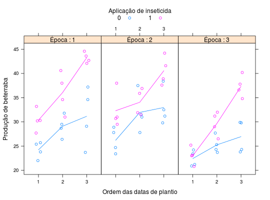

Experimento estudar o efeito de datas de plantio, épocas de colheita e aplicação de inseticidas na produção de beterraba. Os tratamentos foi arranjados em parcelas sub-subdivididas no delineamento de blocos casualizados.
Um data.frame com 72 observações e 5 variáveis, em que
datainsetepocblocoprodBANZATTO; KRONKA (2013), Quadro 6.3.4, pág. 156.
library(lattice) data(BanzattoQd6.3.4)#> Warning: data set ‘BanzattoQd6.3.4’ not foundstr(BanzattoQd6.3.4)#> 'data.frame': 72 obs. of 5 variables: #> $ data : Ord.factor w/ 3 levels "1"<"2"<"3": 1 1 1 1 1 1 2 2 2 2 ... #> $ inset: num 0 0 0 1 1 1 0 0 0 1 ... #> $ epoc : Ord.factor w/ 3 levels "1"<"2"<"3": 1 2 3 1 2 3 1 2 3 1 ... #> $ bloco: Factor w/ 4 levels "1","2","3","4": 1 1 1 1 1 1 1 1 1 1 ... #> $ prod : num 25.7 31.8 34.6 27.7 38 42.1 28.9 37.5 38.4 38 ...ftable(with(BanzattoQd6.3.4, tapply(prod, list(data = data, inset = inset, epoc = epoc, bloco = bloco), FUN = mean)))#> bloco 1 2 3 4 #> data inset epoc #> 1 0 1 25.7 25.4 23.8 22.0 #> 2 31.8 29.5 28.7 26.4 #> 3 34.6 37.2 29.1 23.7 #> 1 1 27.7 30.3 30.2 33.2 #> 2 38.0 40.6 34.6 31.0 #> 3 42.1 43.6 44.6 42.7 #> 2 0 1 28.9 24.7 27.8 23.4 #> 2 37.5 31.5 31.0 27.8 #> 3 38.4 32.5 31.2 29.8 #> 1 1 38.0 31.0 29.5 30.7 #> 2 36.9 31.9 31.5 35.9 #> 3 44.2 41.6 38.9 37.6 #> 3 0 1 23.4 24.2 21.2 20.9 #> 2 25.3 27.7 23.7 24.3 #> 3 29.8 29.9 24.3 23.8 #> 1 1 20.8 23.0 25.2 23.1 #> 2 29.0 32.0 26.5 31.2 #> 3 36.6 37.8 34.8 40.2xyplot(prod ~ epoc | data, groups = inset, data = BanzattoQd6.3.4, as.table = TRUE, layout = c(NA, 1), jitter.x = TRUE, type = c("p", "a"), auto.key = list(title = "Aplicação de inseticida", cex.title = 1, columns = 2), strip = strip.custom(var.name = "Época", strip.names = TRUE), xlab = "Ordem das datas de plantio", ylab = "Produção de beterraba")